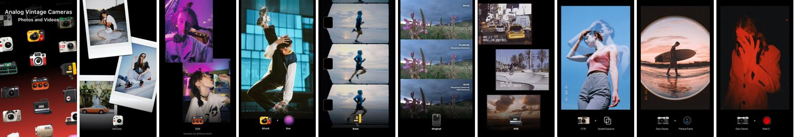
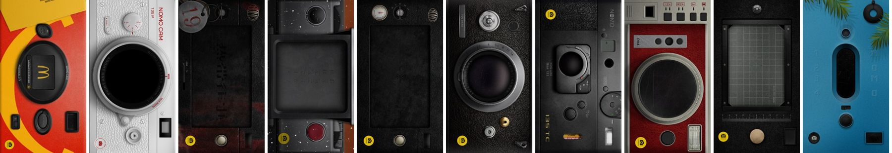
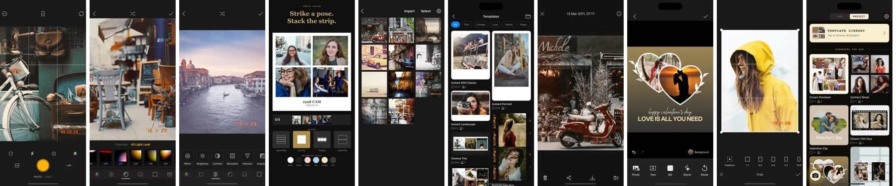
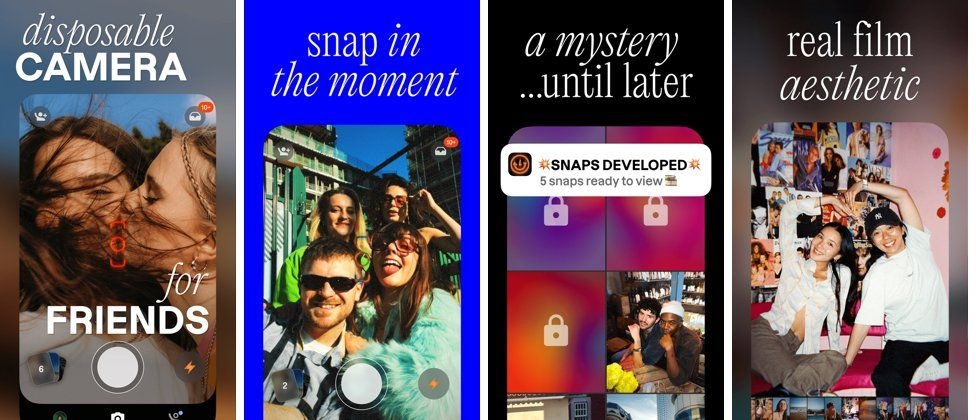
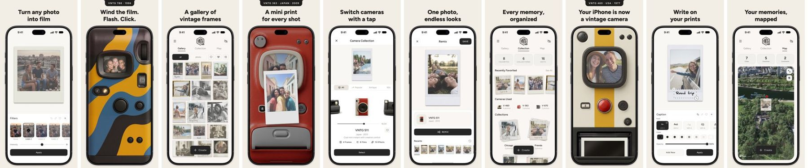
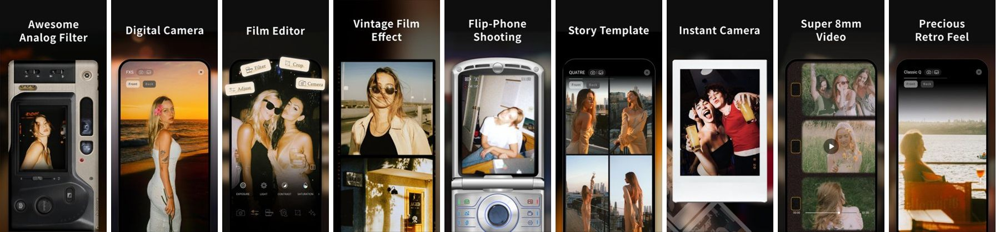
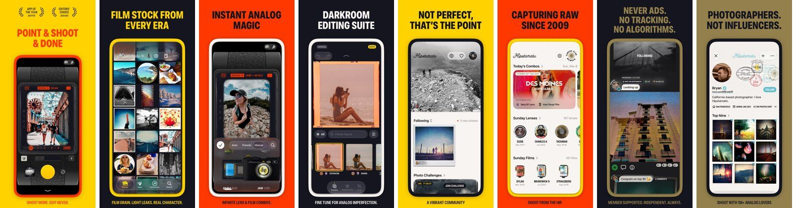
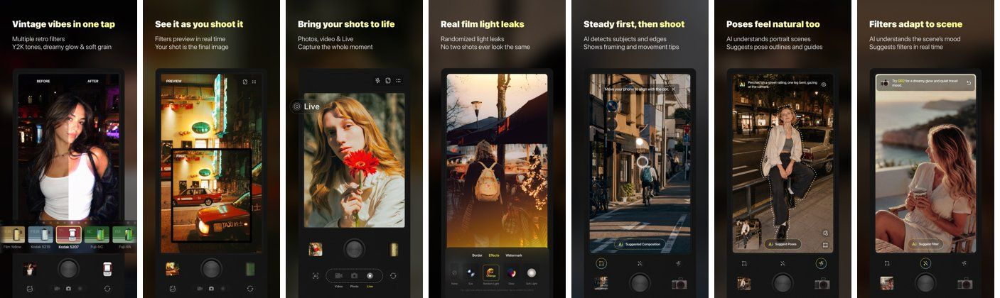
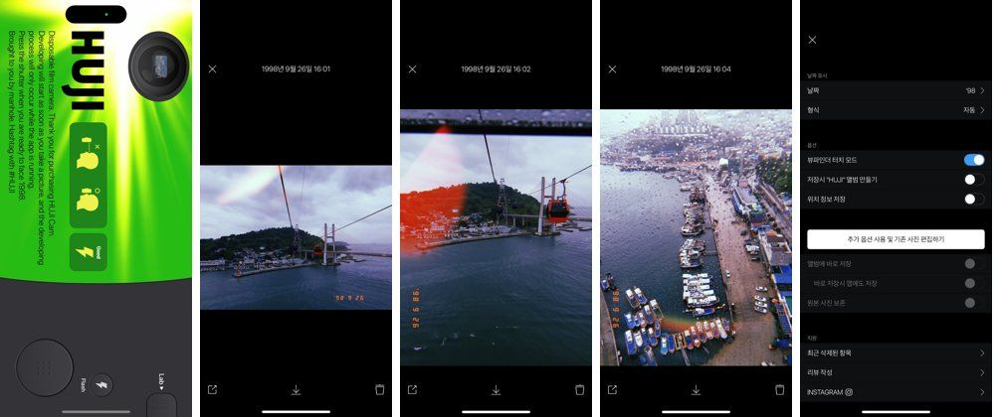
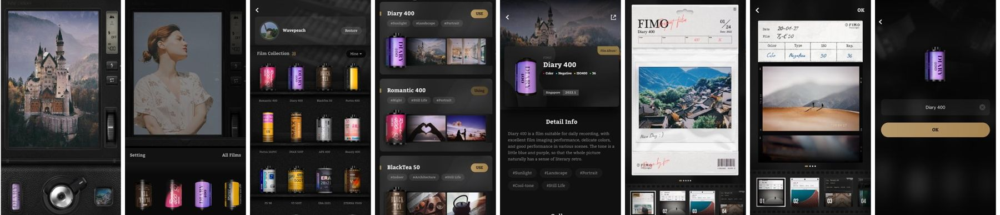

<title>竞品商店截图</title>
<meta name="claude:viewport-fit-sides" content="cover">
<style>
:root{--bg:#f3efe6;--fg:#201c17;--muted:#6f675c;--line:#ddd5c6;--card:#fbf8f2;--accent:#b23b1e}
@media (prefers-color-scheme:dark){:root:not([data-theme="light"]){--bg:#15130f;--fg:#ede7db;--muted:#9b9284;--line:#332e27;--card:#1e1b17;--accent:#ec7b52;color-scheme:dark}}
:root[data-theme="dark"]{--bg:#15130f;--fg:#ede7db;--muted:#9b9284;--line:#332e27;--card:#1e1b17;--accent:#ec7b52;color-scheme:dark}
body{background:var(--bg);color:var(--fg);font:16px/1.7 -apple-system,"PingFang SC",system-ui,sans-serif;padding-left:max(16px,env(safe-area-inset-left,0px));padding-right:max(16px,env(safe-area-inset-right,0px));padding-block:22px 56px}
main{max-width:860px;margin:0 auto}
h1{font-size:24px;margin:0 0 4px;text-wrap:balance}h2{font-size:18px;margin:30px 0 8px;text-wrap:balance}
.sub{color:var(--muted);font-size:14px;margin:0 0 18px}
.box{background:var(--card);border:1px solid var(--line);border-radius:12px;padding:12px 16px;margin:12px 0}
.app{margin:18px 0 26px}.app h3{font-size:16px;margin:0 0 2px}.app .meta{color:var(--muted);font-size:13px;margin:0 0 6px}
.strip{overflow-x:auto;border:1px solid var(--line);border-radius:10px;background:#000}
.strip img{display:block;height:260px;width:auto;max-width:none}
ul{padding-left:20px}li{margin:5px 0}
.n{font:600 12px/1 ui-monospace,Menlo,monospace;color:var(--accent);margin-right:6px}
.tbl{overflow-x:auto}table{border-collapse:collapse;min-width:560px;font-size:14px}td,th{border-bottom:1px solid var(--line);padding:6px 8px;text-align:left;vertical-align:top}
</style>
<main>
<h1>竞品商店截图</h1>
<p class="sub">从 App Store 美区拉的 10 个同类相机 App 的截图（2026-11-22），左右滑动看每一组。括号里是评分人数。图仅供我们内部参考。</p>

<div class="box"><b>一句话：</b>卖得最好的几家（Dazz 11.8 万、NOMO 4.8 万、1998 Cam 4 万评分）截图上几乎不写字：要么整屏放“拍出来的照片”，要么整屏放“相机本身”。写标题的几家（VNTG、Hipstamatic、Kapi）标题都只有 2–5 个词，说的是动作或结果，没有修辞。</div>

<h2>看到的规律</h2>
<ul>
<li><span class="n">1</span><b>第一张定生死，说清“这是什么”。</b>Dazz 第一张是一墙小相机图标（“这里有很多相机”）；NOMO 第一张就是整台相机；VNTG 是“把任何照片变成胶片”；Hipstamatic 是“对准、按下、完成”。</li>
<li><span class="n">2</span><b>成片比界面重要。</b>Dazz、OldRoll、Lapse、1998 Cam 大部分截图是好看的人像、旅行照，底下只用小图标标出用的是哪台相机或哪卷胶卷。人物多、年轻、暖色调。</li>
<li><span class="n">3</span><b>拟物相机直接整屏放，不套手机外框。</b>NOMO 全部 10 张都是相机机身本身；VNTG 也是“套框的界面”和“不套框的整台相机”交替出现。这一点 Koco 的机身和相机包最有优势。</li>
<li><span class="n">4</span><b>标题短、口语、有动作。</b>VNTG：“Wind the film. Flash. Click.”“Write on your prints”；Kapi：“See it as you shoot it”；Hipstamatic 用大字表态度：“NOT PERFECT, THAT'S THE POINT”“NEVER ADS. NO TRACKING. NO ALGORITHMS.”</li>
<li><span class="n">5</span><b>前后对比很直观。</b>Kapi 第一张就是左右分屏 before/after；Dazz 有原图/ProRAW 三连对比。</li>
<li><span class="n">6</span><b>背景两条路：</b>黑底大图（Dazz、OldRoll、Kapi）显得照片亮；暖白纸色底（VNTG）显得干净、有质感、像 Koco 的气质。</li>
<li><span class="n">7</span><b>张数：</b>强的几家都放满 8–10 张；Lapse 只有 4 张但每张都是大字 + 大照片。</li>
</ul>

<h2>对 Koco 截图的建议</h2>
<div class="box">
<p><b>改方向：</b>我们之前的样稿是“深色木桌 + 小块界面 + 一行标题”。看完竞品，建议改成 <b>“相机整屏 + 成片整屏”交替</b>，字少、字短，标题由你来写。</p>
<div class="tbl"><table>
<tr><th>#</th><th>画面</th><th>学谁</th></tr>
<tr><td>1</td><td>外屏机身整屏，取景窗里是一张很好看的人像（已套胶片），不套手机框</td><td>NOMO、VNTG</td></tr>
<tr><td>2</td><td>同一张照片左右分：iPhone 原图 / 胶片效果</td><td>Kapi、Dazz</td></tr>
<tr><td>3</td><td>展开的相机包整屏（一排胶卷罐 + 卡片），这是别家没有的</td><td>FIMO 的胶卷架、NOMO</td></tr>
<tr><td>4–5</td><td>两张整屏成片（人像、旅行），角落一个小胶卷罐 + 卷名</td><td>Dazz、OldRoll</td></tr>
<tr><td>6</td><td>半折腰平取景（Duo 独有）</td><td>—</td></tr>
<tr><td>7</td><td>“轮到你拍了”来信图 / 小册「它睡着了」</td><td>VNTG 的“Write on your prints”</td></tr>
<tr><td>8</td><td>大字表态：不用账号、不上传、不追踪</td><td>Hipstamatic</td></tr>
</table></div>
<p><b>还有一件更要紧的：</b>App Store 必须有普通 iPhone（6.9 寸竖屏）的截图，大多数人看到的是这一套；Duo 那套是额外的。建议先做竖屏 iPhone 的 8 张，Duo 的用同样的画面横排。</p>
<p><b>成片从哪来：</b>人像和旅行照用我们样张里 AI 生成的原图 + Koco 实时渲染的胶片效果（截图角落标“示例照片”）；如果你有自己拍的好照片，效果会更真。</p>
</div>

<h2>十个竞品</h2>
<div class="app"><h3>Dazz Cam（118,410 · 4.7）</h3><p class="meta">几乎不写字：第一张一墙相机，后面全是整屏成片 + 底部相机图标和名字。</p><div class="strip"></div></div>
<div class="app"><h3>NOMO CAM（48,151 · 4.7）</h3><p class="meta">一个字都没有，10 张全是相机机身本身。拟物做到极致。</p><div class="strip"></div></div>
<div class="app"><h3>1998 Cam（40,466 · 4.8）</h3><p class="meta">直接放界面截图，展示功能多（拼图、模板、编辑），偏工具感。</p><div class="strip"></div></div>
<div class="app"><h3>Lapse（118,320 · 4.8）</h3><p class="meta">只有 4 张：大号衬线字 + 朋友合照，讲“社交一次性相机”。</p><div class="strip"></div></div>
<div class="app"><h3>VNTG（6,952 · 4.7）</h3><p class="meta">暖白底 + 手机框 + 2–5 词标题，中间穿插整屏相机机身。跟 Koco 气质最近。</p><div class="strip"></div></div>
<div class="app"><h3>OldRoll（5,611 · 4.7）</h3><p class="meta">黑底 + 大照片 + 白色两三词标题，每张一个功能。</p><div class="strip"></div></div>
<div class="app"><h3>Hipstamatic（2,870 · 4.6）</h3><p class="meta">黄红黑撞色，大写态度标题；后半讲社区和“不广告、不追踪、不算法”。</p><div class="strip"></div></div>
<div class="app"><h3>Kapi Cam（1,660 · 4.7）</h3><p class="meta">第一张 before/after，标题 + 一行小字说明，偏功能介绍。</p><div class="strip"></div></div>
<div class="app"><h3>Huji Cam（12,006 · 4.2）</h3><p class="meta">老牌，几乎是原始界面截图，没有包装。</p><div class="strip"></div></div>
<div class="app"><h3>FIMO（258 · 4.0）</h3><p class="meta">胶卷罐货架和“胶卷档案卡”很像我们的方向，但截图不写字、偏暗，第一眼不知道是干嘛的。</p><div class="strip"></div></div>
</main>
